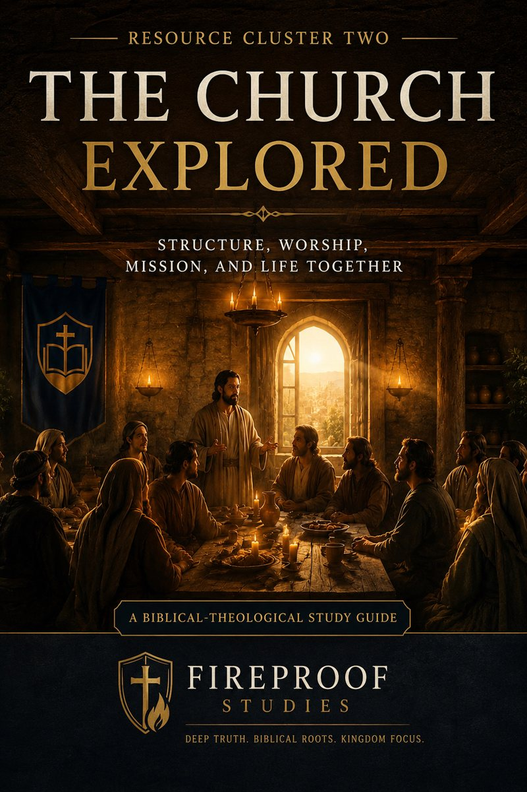

{kind=link}
Before Class
Read the Workbook
Use the workbook section and connected article to prepare the theological substance of the lesson.
Printable study resources for The Church Explored
This page gathers the RC2 workbook and adult participant handouts. Use the workbook as the main study guide and the handouts for classroom reinforcement, group discussion, review, and take-home application.

The workbook and handouts are designed to serve personal study, Sunday School, small groups, and church education.
Structure, Worship, Mission, and Life Together
The workbook is the central study guide for RC2. It introduces the theological framework, guides readers through major themes, and connects the articles, visual theology resources, leader sheets, and handouts into one coherent learning system.
Use it alone or alongside the Leader Sheets, Handouts, Visual Theology graphics, and Core Articles.
The workbook provides the theological foundation. The handouts provide weekly reinforcement. The leader sheets help teachers guide the session.
Use the workbook section and connected article to prepare the theological substance of the lesson.
Use the matching Leader Sheet to guide teaching flow, Scripture emphasis, discussion, application, and prayer.
Use the participant handout to reinforce the central truths and encourage reflection through the week.
These handouts correspond to the adult RC2 Leader Sheets and may be used for Sunday School, small groups, discipleship, or class discussion.
The church as Christ’s gathered people.
Why embodied covenant life matters for Christian discipleship.
The shared life of mutual care, encouragement, and burden-bearing.
How worship shapes the loves, desires, and identity of the church.
The church as a visible outpost of Christ’s Kingdom.
Why every believer matters in the body of Christ.
Leadership, service, humility, and shepherding care.
How the church pursues holiness and restoration under Christ.
Why online resources cannot replace embodied church life.
Baptism, the Lord’s Supper, and covenant belonging.
How the church lives faithfully in the world while belonging to Christ.
How worship shapes daily discipleship and church identity.
The church as household, family, and shared covenant life.
Many members serving together as one body under Christ.
Mission, witness, discipleship, and Gospel proclamation.
The church’s hope in Christ’s return and coming Kingdom.
A final synthesis of identity, worship, mission, endurance, and hope.
The workbook and handouts are strongest when paired with the Leader Sheets, Visual Theology graphics, Core Articles, and Youth Resources.
Use these to lead adult sessions clearly and sequentially.
View Leader SheetsUse the graphics to support discussion, slides, and classroom explanation.
View VisualsUse the youth leader guides and student handouts for a quarter-length youth series.
View Youth ResourcesUse these resources to help believers understand the church as Christ’s gathered, worshiping, serving, and witnessing people until He returns.
{kind=link}
{kind=link}
{kind=link}
{kind=link}
{kind=link}
{kind=link}
{kind=link}
{kind=link}
{kind=link}
{kind=link}
{kind=link}
{kind=link}
{kind=link}
{kind=link}
{kind=link}
{kind=link}
{kind=link}